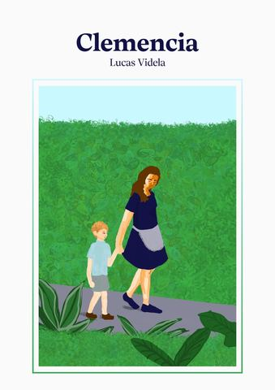

Clemencia
Un chico de once años anota lo que ve: la bandera al amanecer en el colegio, los poemas que su padre guarda en la mesa de luz, una tarde en el zoológico. En la casa está Clemencia, que le lee la enciclopedia de animales y cuida sus plantas en la terraza.
- EPUB
Al amanecer los robles parecen un decorado; es lo primero que miro cuando subo la persiana. Después, tengo que ir al colegio. Para darme ánimo, mientras me visto, Clemencia me lee la enciclopedia de animales.
Clemencia · I